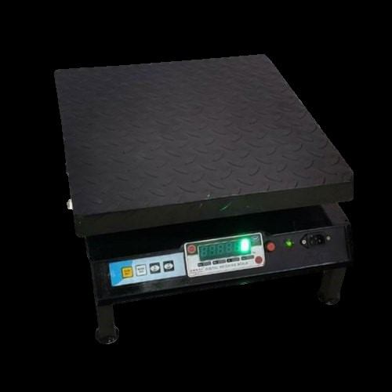
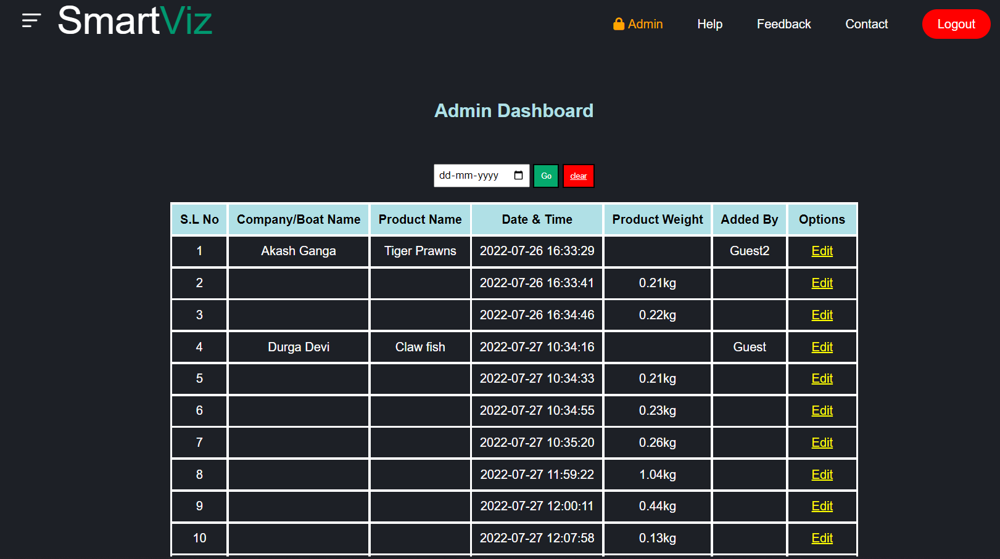
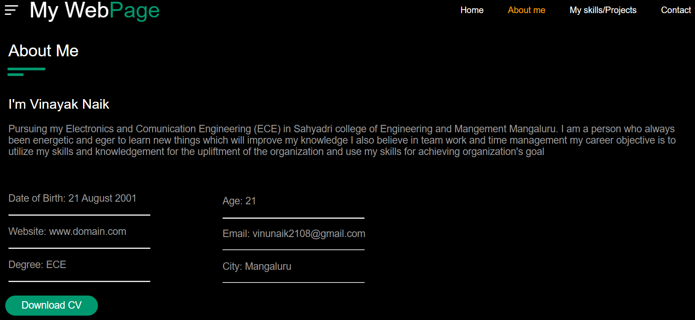
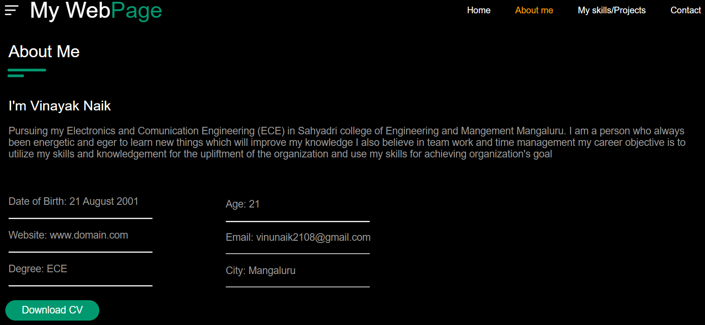
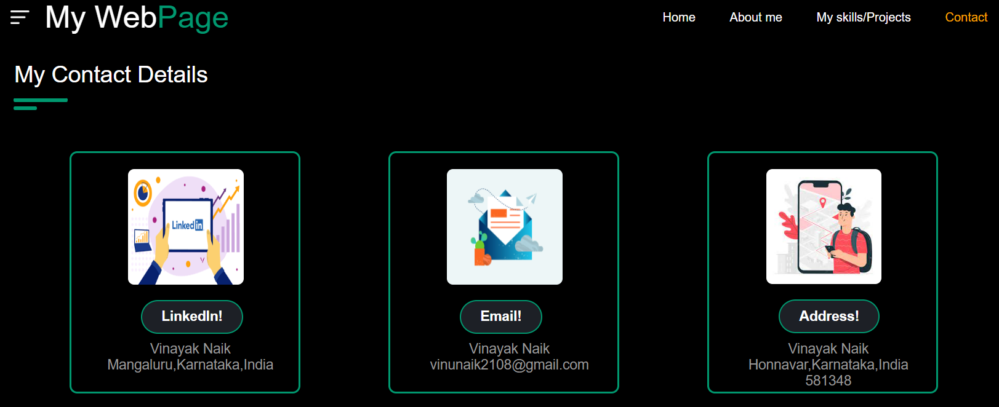

My Projects
Smart Visual Weighing scale
Mangalore is the major city in the coastal region where fishing is a major sector that contributes a lot. In this occupation the fishing boats catch the fish and return in 10 days when they return, the fish are unloaded at the dock and different fish are arranged into different boxes and weighed using a weighing scale, and the weight is noted down manually. At that time the weight may be manipulated or written down wrong and the owners of the fishing boat will not be able to know the exact number of fish being caught by their fishing boat because of this, the loss will occur to the owner . To overcome this, we are making our mini project based on a smart visual scale where the measured weight will be uploaded to the cloud. From this, the owner will be able to access the data which will be directly uploaded to the cloud. Using a phone or computer he will be able to access the data. There is a guest section on the website where the worker will log in and give all the details of the boat and the fish being weighed. The owner can track all monthly and yearly data which is stored on the website. He can also able to monitor the number of fish being sold and keep track of it using the website.
 My Personal Website
This is my personal webiste which contains the details about me what are my skills and what and all projects i have done during my engineering course and it contains all my contact details.This webiste is done using HTML and CSS.
 
